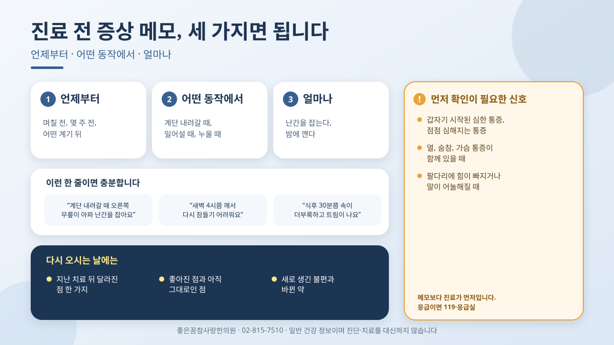
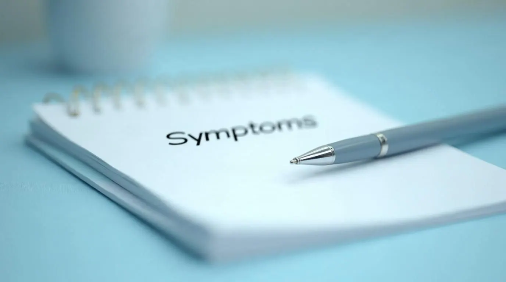

증상 메모는 아픈 곳 이름보다 어떤 동작에서 언제부터 얼마나 불편한지를 적는 것이 도움이 되며 변화가 있으면 날짜와 함께 한두 줄로 남기면 다음 진료에서 이어서 확인하기 좋습니다.
한의원에서 함께 살필 것
- 불편한 곳이 여러 군데라 무엇부터 말해야 할지 모르는 경우 가장 힘든 것부터 함께…
- 증상이 날마다 달라 설명이 어려운 경우 좋은 날과 나쁜 날을 비교해 살핍니다.
- 다른 병원 진료와 함께 다니는 경우 지금까지의 흐름을 함께 정리합니다.
먼저 확인이 필요한 신호
- 갑자기 시작된 심한 통증이나 점점 심해지는 통증
- 열, 숨참, 가슴 통증이 함께 있는 경우
- 팔다리에 힘이 빠지거나 말이 어눌해지는 경우

진료 전에 긴 설명을 준비하지 않아도 됩니다. "언제부터, 어떤 동작에서, 얼마나" 세 가지만 몇 줄 적어 오셔도 이야기가 훨씬 잘 이어집니다. 진료실에서는 긴장해서 중요한 이야기를 빠뜨리기 쉬워서, 짧은 메모가 큰 도움이 됩니다.
왜 메모가 도움이 되나요
- 진료실에 들어서면 긴장해서 정작 중요한 불편을 잊어버리는 경우가 많습니다.
- "무릎이 아파요"보다 "계단 내려갈 때 오른쪽 무릎이 아파요"가 살펴볼 곳을 훨씬 좁혀 줍니다.
- 증상은 날마다 달라서 기억만으로는 흐름을 알기 어렵습니다.
- 다음 진료 때 지난번과 비교할 기준이 생깁니다.

자주 하는 오해
- 메모는 길고 자세해야 한다고 여기기 쉽지만, 세 줄 정도의 짧은 메모가 오히려 이야기를 잘 이어 줍니다.
- 의학 용어로 정확히 써야 한다고 생각하기 쉽지만, "찌릿하다", "묵직하다", "쑤신다"처럼 평소 쓰는 말이 더 도움이 됩니다.
- 아픈 곳만 적으면 된다고 여기기 쉽지만, 잠과 소화, 대변, 기분의 변화도 한 줄 적어 두면 몸 전체를 살피는 데 도움이 됩니다.
- 사소한 증상은 빼야 한다고 생각하기 쉽지만, 별것 아닌 듯한 변화가 단서가 되기도 해 적어 두시는 편이 좋습니다.
예를 들면 이런 경우입니다
- 예를 들어 점심시간에 잠깐 들르는 직장인이라면, 출근길 지하철에서 휴대폰 메모에 "언제부터, 어떤 동작에서, 얼마나" 세 줄만 적어 오셔도 충분합니다.
- 예를 들어 시험 준비로 바쁜 수험생이라면, 공부하다 불편했던 시간대와 그날 잠든 시간을 한 줄씩 적어 오시면 흐름이 잘 보입니다.
- 예를 들어 여러 군데가 불편한 어르신이라면, 가장 힘든 곳 하나를 맨 위에 적고 나머지는 아래에 이어 적으시면 진료실에서 순서대로 여쭙기 쉽습니다.

스스로 점검해 보세요
- 불편이 언제부터 시작됐는지 날짜나 계기를 말할 수 있다
- 어떤 동작이나 상황에서 불편한지 한 가지는 꼽을 수 있다
- 0~10 가운데 어느 정도인지 숫자로 말해 볼 수 있다
- 불편할 때 나아지게 하는 것과 심해지게 하는 것을 알고 있다
- 요즘 잠, 소화, 대변, 기분의 변화를 한 줄로 말할 수 있다
- 복용 중인 약과 영양제 이름을 적어 두었다
다 채우지 못해도 괜찮습니다. 비어 있는 항목은 진료실에서 함께 채워 갑니다.
이렇게 기록해 오시면 상담이 쉬워집니다
- 언제부터: 며칠 전, 몇 주 전, 어떤 계기 뒤
- 어떤 동작에서: 계단을 내려갈 때, 일어설 때, 누울 때
- 얼마나: 난간을 잡는다, 한 층은 괜찮다, 밤에 깬다
- 무엇이 도움이 되나요: 쉬면, 따뜻하게 하면, 움직이면
- 다른 불편: 잠, 소화, 대변, 기분

이런 예시가 좋습니다
- "평지는 괜찮은데 계단 내려갈 때 오른쪽 무릎이 아파서 난간을 잡아요."
- "새벽 4시쯤 깨서 다시 잠들기 어려워요."
- "식후 30분쯤 속이 더부룩하고 트림이 나요."
한의원에서 함께 살필 수 있는 경우
- 불편한 곳이 여러 군데라 무엇부터 말해야 할지 모르는 경우 가장 힘든 것부터 함께 정리합니다.
- 증상이 날마다 달라 설명이 어려운 경우 좋은 날과 나쁜 날을 비교해 살핍니다.
- 다른 병원 진료와 함께 다니는 경우 지금까지의 흐름을 함께 정리합니다.
좋은꿈참사랑한의원에서는 메모를 보며 먼저 충분히 듣고, 몸의 온기·소화·잠·대소변처럼 일상의 말로 몸 전체를 여쭙습니다. 진맥을 기본으로 하고 필요하다고 판단될 때 설진·복진이나 초음파 등을 더해 살핀 뒤 침·약침·추나·한약 상담 등을 상태에 맞춰 정하고, 귀가 전에 다음에 확인할 일을 함께 정리해 드립니다.
첫 방문에는 메모를 보며 가장 불편한 점부터 충분히 듣는 문진으로 시작하고, 진맥을 짚습니다. 필요하다고 판단되면 초음파나 인바디 같은 장비로 상태를 더 확인하고, 메모에 적힌 잠·식사·대변 같은 생활 기록을 함께 봅니다. 마지막으로 지금 상태를 어떻게 이해했는지와 앞으로의 치료 방향을 설명해 드리고, 다음에 메모해 오시면 좋을 점도 함께 말씀드립니다.

얼마나 적어 오면 좋을까요
- 처음 오실 때는 메모 세 줄과 복용 중인 약 목록이면 충분합니다.
- 치료를 이어 가는 동안에는 하루 한 줄, 같은 동작과 같은 시간대를 기준으로 며칠 적어 보시면 변화가 잘 보입니다.
- 1~2주가 지나도 메모 속 불편이 그대로이거나 점점 심해진다면 다음 진료 때 꼭 말씀해 주세요.
다시 오시는 날에는
- 지난 치료 뒤 달라진 점 한 가지
- 좋아진 점과 아직 그대로인 점
- 새로 생긴 불편과 바뀐 약

이런 증상은 먼저 확인이 필요합니다
- 갑자기 시작된 심한 통증이나 점점 심해지는 통증
- 열, 숨참, 가슴 통증이 함께 있는 경우
- 팔다리에 힘이 빠지거나 말이 어눌해지는 경우
이런 경우에는 메모를 쓸 시간보다 진료가 먼저입니다. 응급 증상이면 바로 119나 응급실을 찾으세요. 복용 중인 약은 처방한 의사와 상의 없이 줄이거나 끊지 마세요.
함께 읽으면 좋은 글
- 통증이 어느 정도인지는 한의원에서 숫자로 어떻게 표현하면 되나요?
- 진료 전에 하고 싶은 말을 세 줄로 정리하면 상담이 어떻게 달라지나요?
- 다시 방문했을 때 어떤 말로 시작하면 진료가 이어지나요?
자주 묻는 질문
메모를 꼭 가져가야 하나요?
아니요. 말씀으로만 하셔도 됩니다. 메모는 이야기를 정리하는 데 도움이 됩니다.
어떻게 말해야 할지 모르겠어요.
어떤 동작에서 불편한지만 말씀해 주세요. 나머지는 차근차근 여쭙겠습니다.
휴대폰 메모를 보여 드려도 되나요?
네, 휴대폰 메모나 사진 모두 좋습니다.
보호자가 대신 메모를 적어 와도 되나요?
네. 보호자가 곁에서 본 변화(잠꼬대, 식사량, 걸음걸이 등)는 본인이 놓치기 쉬운 단서가 되어 도움이 됩니다.
증상이 진료 당일에는 괜찮으면 어떻게 하나요?
그래서 메모가 더 도움이 됩니다. 불편했던 날의 시간과 상황을 적어 오시면 그날 기준으로 이야기를 이어 갈 수 있습니다.
진료 시간은 어떻게 되나요?
평일은 09:30~20:00(점심 13:00~14:00), 토·일·공휴일은 09:30~15:00에 진료합니다. 방문 전 전화(02-815-7510)로 확인해 주세요.
이 글은 일반적인 건강 정보이며 개인의 진단이나 치료를 대신하지 않습니다. 증상이 있거나 복용 중인 약이 있다면 진료를 통해 확인하세요. 치료 효과는 개인마다 다를 수 있습니다.
작성 기준: 일반적으로 알려져 있는 건강 정보를 참고해 정리했습니다(대표원장 감수). 증상 기록은 1~2주 동안 하루 1회, 비슷한 시간에 적어 오시면 지난 상태와 비교하기 쉽습니다.
좋은꿈참사랑한의원은 재진 때 지난번 이야기부터 이어서 여쭙니다. 진료시간과 예약은 오시는 길에서 확인하세요.